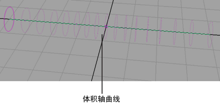
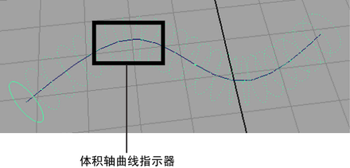

体积轴曲线允许您沿曲线的各个方向移动对象（包括粒子和 nParticle）以及定义绕该曲线的半径，在该半径范围内轴场处于活动状态。创建体积曲线场时，您可以选择一条现有的 NURBS 曲线（要应用该场的对象除外）。否则，将为体积轴场创建默认曲线。
曲线上体积轴场的总体半径是使用“截面半径”(Section Radius)设定的。您可以使用“曲线半径”(Curve Radius)渐变沿体积轴曲线长度改变“截面半径”(Section Radius)。将位置标记添加到“曲线半径”(Curve Radius)渐变后，“半径比例”(Radius Scale)指示器将放置在场景视图中的曲线上。这些指示器将显示 NURBS 曲线上的点，其中“曲线半径”(Curve Radius)缩放为特定值。
创建体积轴曲线
- 从 FX 菜单集中，选择。

- 在属性编辑器中，单击“volumeAxisField”选项卡，然后修改设置。请参见以下内容：
- 设定“体积控制属性”(Volume Control Attributes)
- 设定“体积速率属性”(Volume Speed Attributes)
从现有 NURBS 曲线创建体积轴曲线
- 选择要用作体积轴曲线的 NURBS 曲线，然后在按住 键的同时选择您希望场通过使用体积轴曲线对其产生影响的对象，例如粒子、nParticle 或 nCloth 对象。
- 从 FX 菜单集中，选择。
在场景视图中，点环围绕 NURBS 曲线显示以指示该曲线当前是体积轴曲线。

- 在属性编辑器中，单击“volumeAxisField”选项卡，然后修改设置。请参见以下内容：
- 设定“体积控制属性”(Volume Control Attributes)
- 设定“体积速率属性”(Volume Speed Attributes)
将体积轴曲线连接到粒子和 nParticle 对象
- 在场景视图中，选择体积轴曲线。
- 在“大纲视图”(Outliner)中，选择希望场通过使用体积轴曲线对其产生影响的对象，例如粒子、nParticle 或 nCloth 对象，然后在按住 键的同时选择（Windows 和 Linux）或在按住 键的同时选择 (Mac OS X) 体积轴场。
- 选择“场 > 影响选定对象”(Fields > Affect Selected Object(s))。
设定“体积控制属性”(Volume Control Attributes)
- 在场景视图中，选择要编辑的体积轴曲线。
- 在“属性编辑器”(Attribute Editor)中，单击“VolumeAxisfield”选项卡。
- 在“体积控制属性”(Volume Control Attributes)区域中，设定“截面半径”(Section Radius)以定义体积场的半径。
- 若要设定体积捕获属性以防止对象退出体积场，请执行下列操作：
- 设定“陷阱内部”(Trap Inside)以强制体积场将对象保留在体积内。
- 设定“陷阱半径”(Trap Radius)以指定强制应用“陷阱内部”(Trap Inside)的体积边界的半径（作为局部空间距离）。
- 若要在体积曲线上创建末端，请启用“陷阱末端”(Trap Ends)。
有关其他“体积控制属性”(Volume Control Attributes)的信息，请参见体积轴选项。
设定“曲线半径”(Curve Radius)渐变
- 在场景视图中，选择要为其设定“曲线半径”(Curve Radius)渐变的体积轴曲线。
- 在属性编辑器中，单击“volumeAxisField”选项卡。
- 在“体积控制属性”(Volume Control Attributes)区域中的“曲线半径”(Curve Radius)下，通过执行下列操作设定渐变选项：
设定“体积速率属性”(Volume Speed Attributes)
- 在场景视图中，选择要编辑的体积轴曲线。
- 在“属性编辑器”(Attribute Editor)中，单击“VolumeAxisfield”选项卡。
- 在“体积速率属性”(Volume Speed Attributes)区域中，设定下列内容：
- 远离轴(Away From Axis)，指定粒子或其他对象离开曲线的中心轴的速率。
- 沿轴(Along Axis)，指定粒子或其他对象沿曲线的中心轴移动的速率。
- 绕轴(Around Axis)，指定粒子或其他对象沿所有体积的中心轴移动的速率。
有关其他“体积速率属性”(Volume Speed Attributes)的信息，请参见体积轴选项。